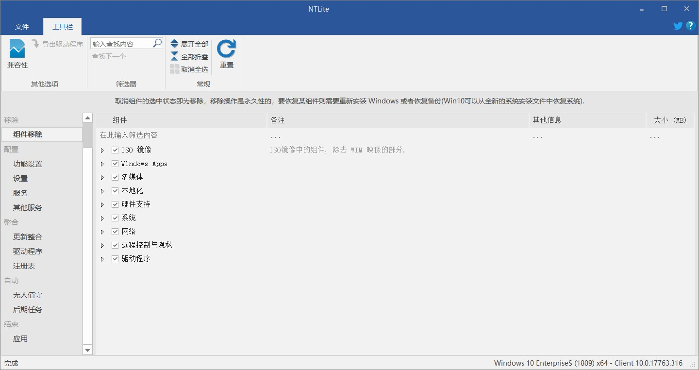
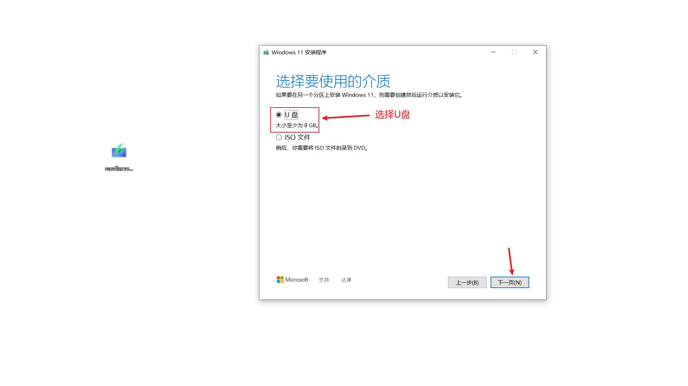
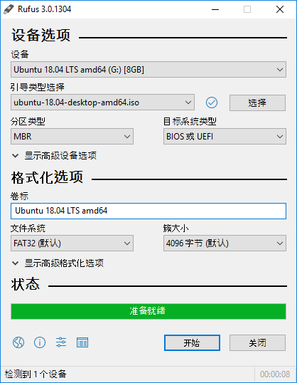

你有没有经历过，Windows电脑出现问题，又没法自己修复，于是你去电脑店去重装系统，重装一次便宜的几十块钱，贵的几百块钱，最关键的是你还不知道他给你装的是不是官方原版的系统。实际上这钱是完全没必要花的，因为重装系统真的没有任何技术含量，顶多就是浪费点时间而已。而且自己动手操作也最干净。
关于Windows重装系统，其实需要做的就是分清它的版本，然后去网上下载对应的镜像（ISO），再拿一个大于8G的U盘制作成PE盘，将ISO放入制作好的U盘，U盘插上电脑就可以重装Windows系统了。
1、关于Windows版本介绍
1、常见的版本
Windows到底有几个版本？每个版本的区别是什么？估计在网上搜索之后，也不太容易找到完整的答案。Windows总共有12个版本。
Windows 家庭版 (Home)
Windows 专业版 (Pro)
Windows 专业版工作站版 (ProWorkstation)
Windows 教育版 (Education)
Windows 专业教育版 (Pro Education)
Windows 企业版 (Enterprise)
Windows 企业版 LTSB分支 (Long Time Service Branch)
Windows 企业版 LTSC分支 (Long Term Servicing Channel)
Windows 移动版 (Mobile)
Windows 企业移动版 (Mobile Enterprise)
Windows 物联网版 (IoT Core)
Windows S版
2、最常见的版本介绍
其中前6个版本是平时常见的版本。
家庭版，顾名思义，为家庭和个人提供的版本，只有最基本的功能。
专业版，在家庭版的基础上增加了Windows Update for Business（WUB）功能，允许用户管理设备及应用、保护敏感企业数据、支持远程及移动生产力场景、云技术支持等，可以让企业管理者更快地获取安全更新，并控制更新部署。
专业工作站版，在专业版的基础上增加了服务器相关的功能。比如支持4路CPU和6TB内存，支持ReFS文件系统、RDMA、NVDIMM等。
企业版，包含Windows的所有功能和WUB，是功能最全的版本。
教育版，基于企业版，本质是是企业版，主要针对学校、科研等教育机构使用，功能与企业版一样，只是面向的用户不同，默认设置不太一样。
专业教育版，基于专业版，本质上是专业版，只是用于教育用户，提供特定于教育的默认设置。
企业版LTSB和LTSC是企业版的特别版本，从名称看可知是长期服务版本，LTSC是LTSB的升级版本，何为长期服务？不进行功能性升级即版本号不变，只进行安全等相关的更新，微软承诺为这个版本提供10年的安全补丁和修复。该版本无应用商店、Edge浏览器，cortana等，相当于是微软官方的精简企业版，没有各类花里胡哨的功能，使用比较稳定，正因为如此也是很多网友喜欢安装的原因。
移动版，主要用于手机平板电脑等。
物联网版，主要用于销售终端、ATM或其他嵌入式设备等。
Windows S版 ，主要面向教育市场推出，该系统的主要特点就是仅允许安装来自Windows应用商店的应用程序同时还会阻止普通的桌面程序安装。
3、推荐的版本
如果只是正常使用的话，推荐安装专业工作站版，它的功能足够我们使用了。如果你不喜欢更新而是趋向稳定，且不希望系统过大，那么推荐安装LTSC（俗称“老坛酸菜”），而且LTSC对于老机子更适配。
2、关于ISO的选择
1、ISO的区别
常见的ISO有两种：business editions（商业版） 和 consumer editions（消费者版本）
business editions（商业版）：含专业版+企业版+教育版+专业教育版+专业工作站版
consumer editions（消费者版本）：含家庭版+专业版+教育版+专业教育版+专业工作站版
我个人平时下载的是business editions（商业版），安装其中的专业工作站版使用。
企业版LTSB和LTSC的ISO，一般都是单独列出来，供你选择下载。
2、关于绕过Win11硬件限制，无人值守和创建本地账户
通常情况下，如果你的电脑有Win11的硬件限制，那么只能在BIOS中将相关限制解开，不过目前有部分PE已经支持重装时绕过Win11的硬件限制了。
BIOS快捷键

关于无人值守和创建本地账户，其实就是在重装前，改造ISO，将我们重装中的部署操作提前弄好，节省后面安装的时间。无人值守，顾名思义就是不需要人操作，它全部自动操作，创建本地账户就省略了后面部署我们再去操作了，尤其是新的Win11版本，取消了创建本地账户，直接强制登录在线账户才能进行下一步。
通常完成无人值守和创建本地账户，有三种方法。
1、直接解压ISO，将无人值守和创建本地账户文件拖入ISO文件夹内相应位置。此方法需要无人值守和创建本地账户文件。
2、使用UItraISO，加载ISO，将无人值守和创建本地账户文件放入ISO相应位置。相比方法1，无需解压ISO。且改造完直接就可以刻录了。
3、使用NTLite。解压ISO，使用NTLite加载，进行无人值守和创建本地账户操作。优点是无需像1和2一样去下载无人值守和创建本地账户文件，缺点是NTLite一般用于精简ISO，仅用于此操作有些小题大做。
图示
UItraISO

NTLite
上述三种方法各有各的优缺点，但都对新手不好操作，对老手来说耽误时间。在此我推荐使用此脚本，一键操作，从根本上解决烦恼。详细信息请在导航栏——系统常用工具——软件推荐——Windows镜像一键改造
3、关于制作U盘启动盘
1、ISO直接刻录
直接ISO刻录到U盘的话，通常是用微软官方工具或者使用UItraISO来完成。
优点：速度快
缺点：功能单一，只能用于重装系统，且U盘不能作为正常U盘存储文件，只能存储一个ISO。
图示
微软官方工具
UItraISO
2、PE启动盘
将U盘制作为PE盘的话，可以不仅限重装系统。
优点：能维护系统；能装多个ISO；U盘可作为正常U盘存储文件。
缺点：PE的兼容性需要考虑。
图示
FirPE


微PE

优启通

Ventoy
Rufus